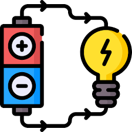

La corriente eléctrica es un fenómeno físico causado por el desplazamiento de una carga (ión o electrón). En el caso de un conductor metálico, son principalmente los electrones los que toman parte en la corriente. La intensidad de la corriente es la cantidad de carga que pasa por un conductor por unidad de tiempo. Uno puede comparar esto con la corriente de un río. El flujo (cantidad de agua por unidad de tiempo) sería la intensidad expresada en Amperios (A). La presión sería la diferencia de potencial expresada en Voltios (V). Al igual que puede existir una presión (por diferencia en el nivel, por ejemplo) aunque el agua no esté circulando, del mismo modo puede detectarse la electricidad sin que necesariamente circulen los electrones. Así, un enchufe presentará voltaje tanto si la luz está encendida como si no. Por el contrario, si la luz está apagada no se detectará intensidad de corriente Malvino, A. P., & Bates, D. (2017).
